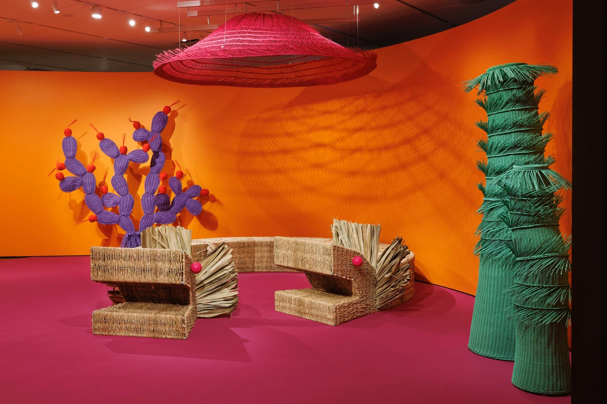
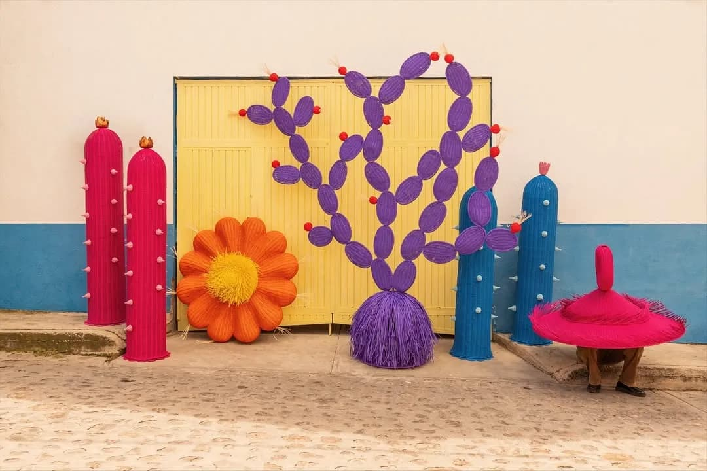
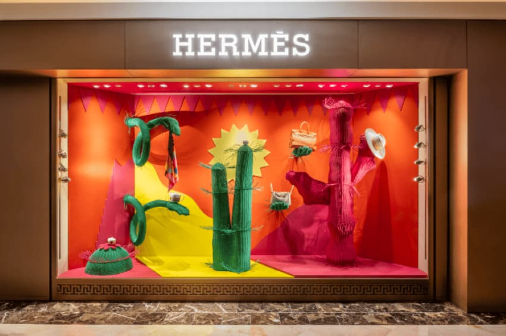

Mestiz

El estudio mexicano Mestíz, fundado por Daniel Valero, desarrolla piezas de mobiliario y objetos que conectan el diseño contemporáneo con la riqueza de la artesanía tradicional. Su trabajo parte de la colaboración directa con artesanos, rescatando técnicas y materiales locales para reinterpretarlos desde una mirada actual. Cada pieza funciona como un puente entre pasado y presente, donde la identidad cultural se traduce en objetos con una estética refinada y profundamente significativa.
Diseños

"El Charco", Nytimes, Denver art museum, 2024

Taller Vogue para gala de dia de muertos, Ciudad de México, 2025

Vistras de ventana para Hermès, Cancún, 2023